Non-profit · Open source · Austin, TX
Bitcoin has no annual report.So we publish one.
Bitcoin Data Labs turns the public record of Bitcoin (every commit, review, channel and block) into open dashboards, datasets and reports that anyone can check. Daily, weekly and monthly, with no paywall.

Live From the lab's own pipelines
In partnership with
Start here
One public record, read four ways.
Bitcoin's development, funding and network activity are public, but scattered across GitHub, mailing lists, IRC, gossip and the chain. We collect it, clean it and publish it for the people who need it.
Funders
See where development effort goes, who reviews it, how healthy Bitcoin Core is, and who funds the people doing the work.
Development and fundingResearchers
Work from open, versioned datasets with documented methodology, and cite numbers you can rebuild yourself.
Open data and methodsDevelopers
Follow what merged this week, what needs review, and what the Core dev meeting decided, in five minutes.
This Week in BitcoinNode operators
Rank nodes, inspect channels and peers, and watch liquidity move across the Lightning Network every day.
Lightning IntelligenceProgram 01 · Orange Dev
LiveBitcoin Core, measured.
Most of the Bitcoin network runs Bitcoin Core, yet no one publishes its operating numbers. Orange Dev is our suite for doing that: one open pipeline over Bitcoin's development record, read through five lenses. Now, What, Who, Money and Beyond Core.
Public sources
- GitHub PRs & reviews
- BIPs
- Mailing list
- Delving Bitcoin
- IRC meetings
- Optech
- Grant records
One open pipeline
orange-dev-dataIngest → process → analyze → deliver. Commits since 2009, review history since 2010, identities resolved across GitHub, mailing lists and IRC.
Published as
- Dashboards
- Monthly report
- Weekly digest
- Meeting summaries
- Posts on X, LinkedIn & Nostr
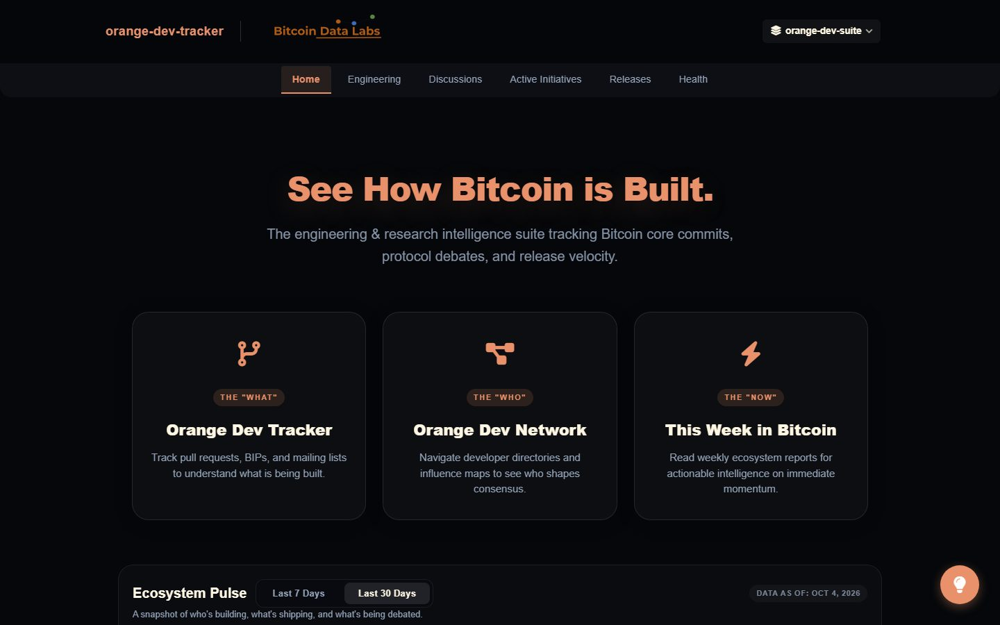
Orange Dev Tracker
What is shipping in Bitcoin Core, and is the project healthy?
Engineering throughput, review rigor, releases and active initiatives, plus the vital signs a funder should watch: bus factor, maintainer load, talent inflow and how institutionalized contribution has become. Home of the monthly State of Bitcoin Core report.
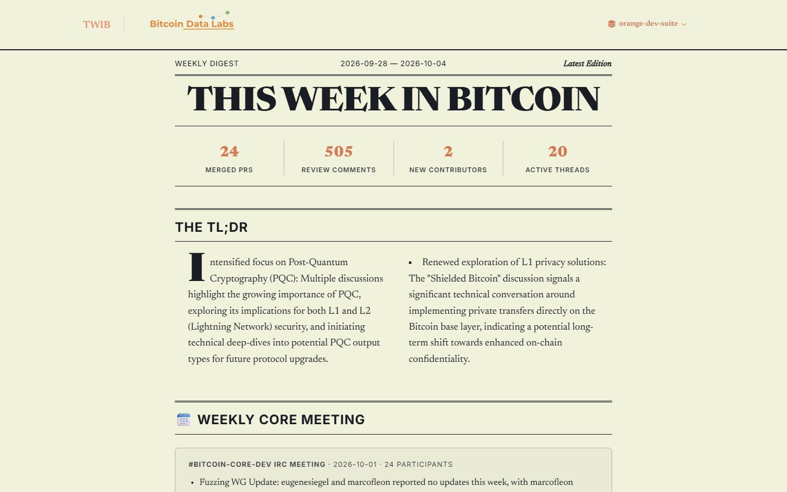
This Week in Bitcoin
What happened in Bitcoin Core this week?
What merged, what needs review, and what the weekly dev meeting decided, as a five-minute read.
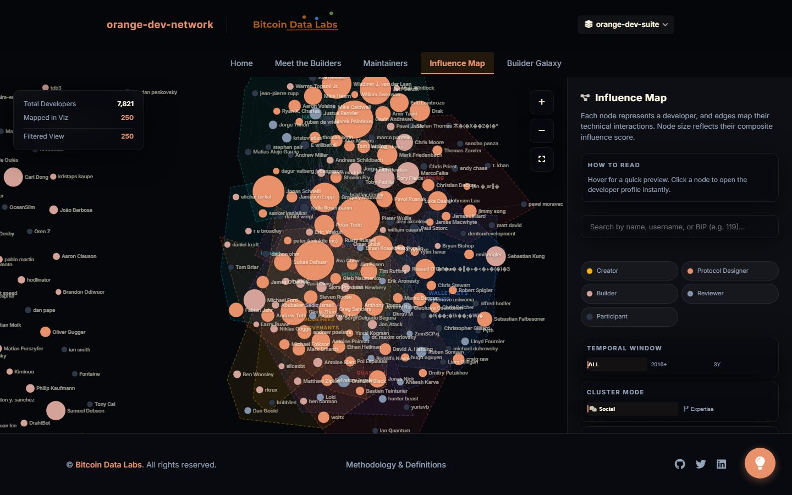
Orange Dev Network
Who builds Bitcoin, and how do they work together?
Contributor profiles, maintainers, a builder directory and an influence graph across code, review, research and BIPs.
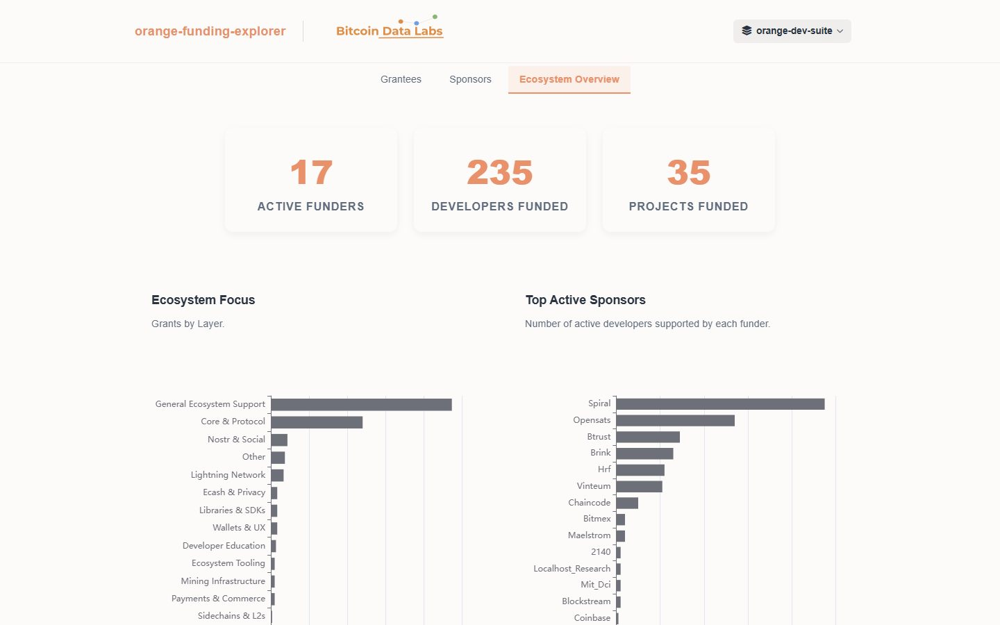
Funding Explorer
Who funds Bitcoin developers, and which work do they fund?
Funders, sponsored developers and the projects they support, with a profile for every funder and grantee.
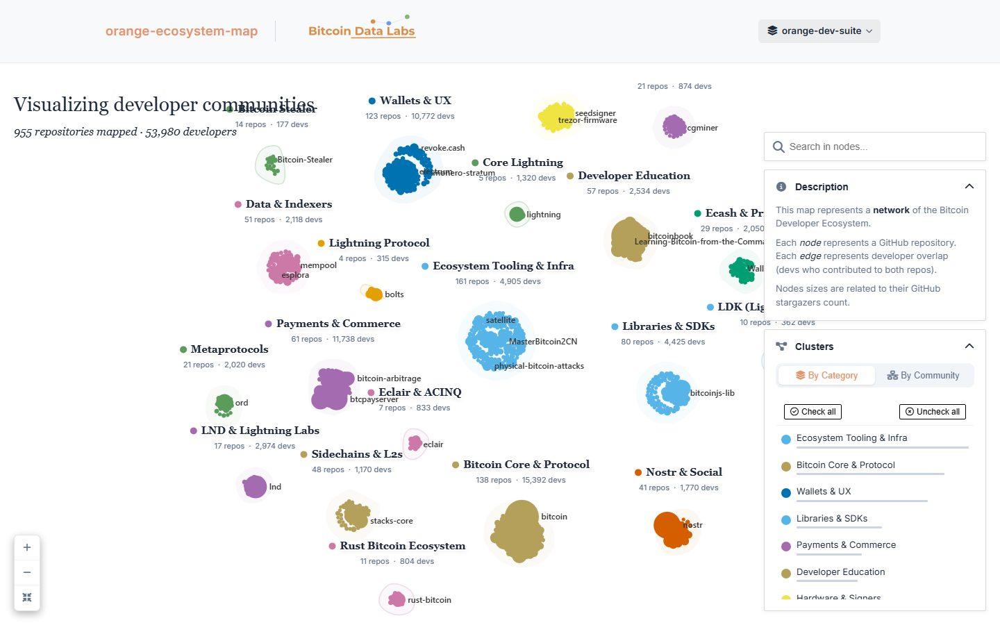
Ecosystem Map
What else is being built on Bitcoin, and by whom?
955 repositories and 55,000+ developers clustered into the communities behind wallets, Lightning, libraries and mining.
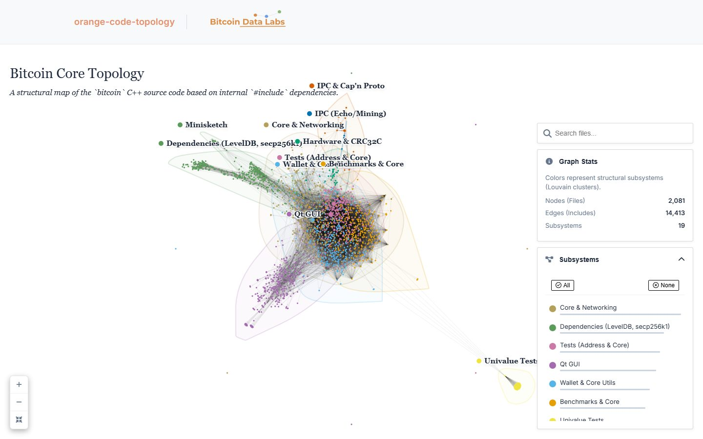
Code Topology
How does the Bitcoin Core codebase fit together?
A map of bitcoin/src built from #include dependencies: subsystems, and the files that bridge them.
Program 02 · Lightning & Layer 2s
DailyBitcoin's second layers, measured.
Lightning, every day: gossip snapshots since May 2023 joined with on-chain channel opens and closes, to rank nodes, map the graph and follow capital. L2 Watch brings the same audit approach to sidechains, starting with Liquid.
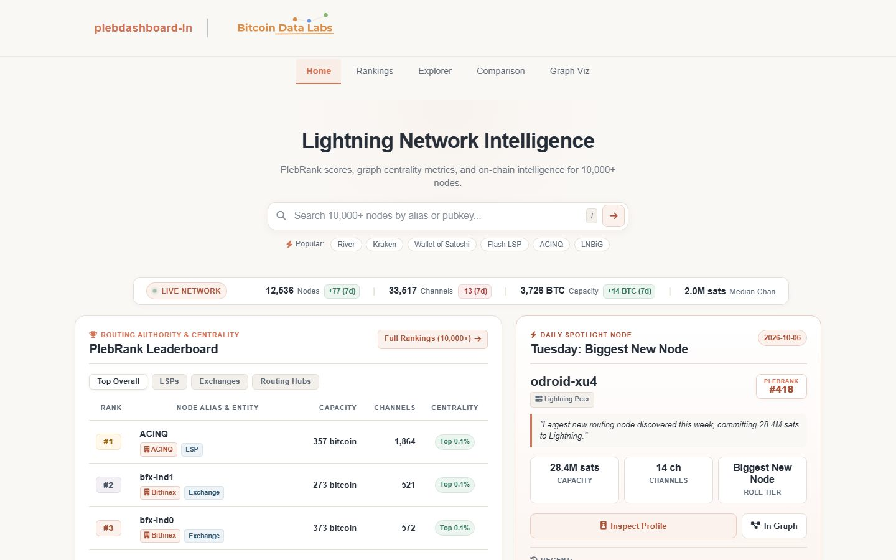
Lightning Dashboard
Which nodes matter, and where is liquidity moving?
PlebRank leaderboards, node and channel explorers, per-node profiles, node comparison and a daily node spotlight.
LN Graph Viz
Explore the whole network interactively, or only its Highway (>5M sats) and Freeway (>1 BTC) channels, with PlebRank and bridge-node filters.
The Summer Lightning Broke (a Little)
Core Lightning lost a fifth of its public nodes and capacity. What the gossip and the chain show about force closes and recovery.
The public square
The data comes to you.
Dashboards wait to be visited, so we also publish. Our automation renders each report from the same snapshot the dashboards use, then posts it to X, LinkedIn and Nostr on a fixed schedule.
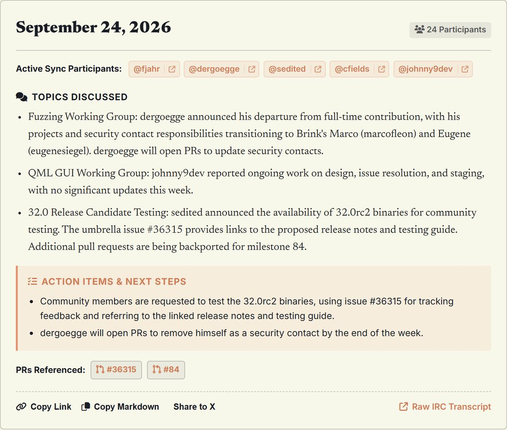


Program 03 · Forensics & Research
When something happens on-chain, we measure it.
Standalone investigations that take one question and answer it with on-chain data, with the methodology published next to the findings.
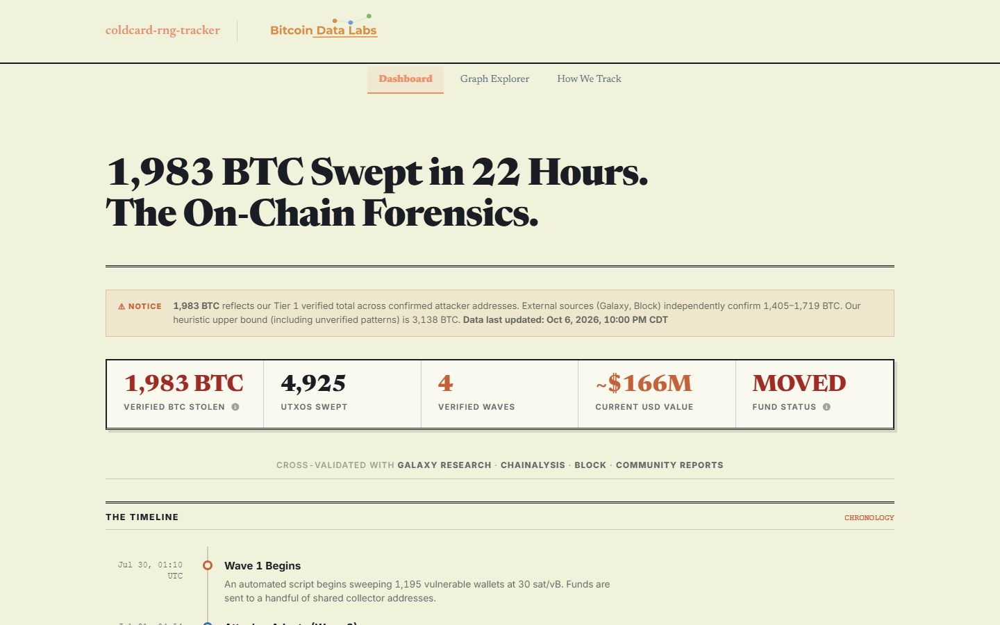
1,983 BTC swept in 22 hours
A wave-by-wave reconstruction of a weak-RNG sweep: 4,925 drained addresses, how the attacker's behavior changed, a fund-flow graph and the full methodology.
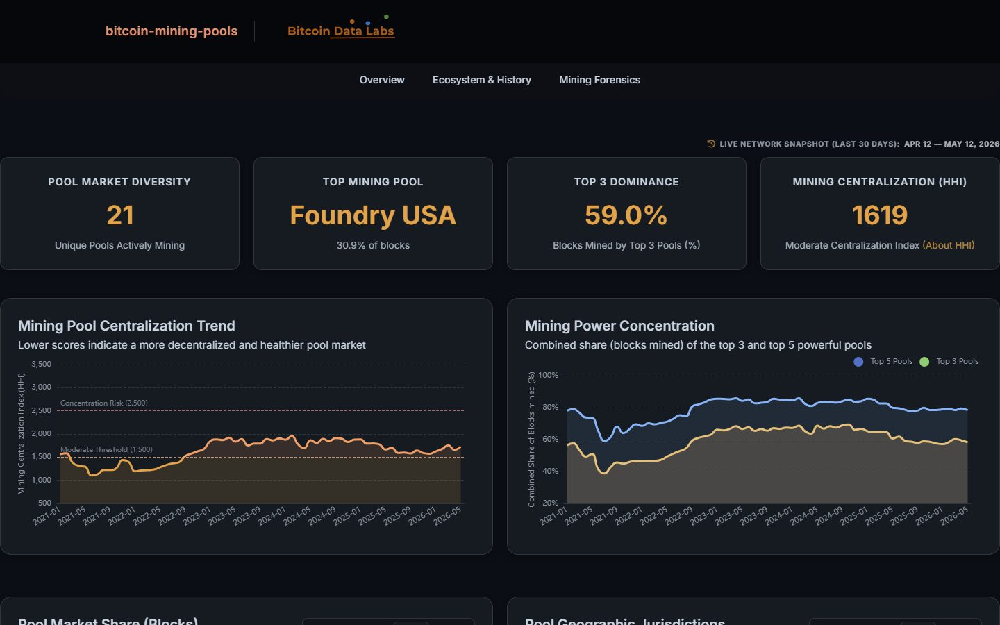
Mining Pool Profiler
Every block since genesis attributed to its pool: market share, HHI concentration and top-3 dominance over time, with 160+ pool profiles.
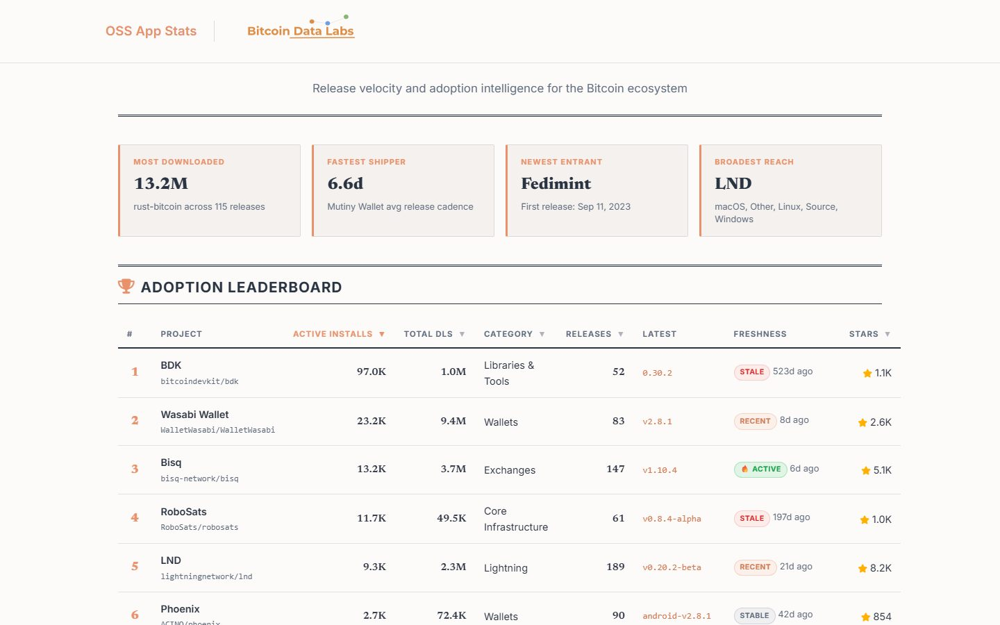
OSS App Stats
Downloads, release cadence and freshness for Bitcoin Core, LND, CLN, Sparrow, BDK and 30+ other open-source projects.
Open data
Don't trust our charts. Check them.
Every dashboard reads files that sit in a public repository. Clone them, query them, cite them.
How we work
Open by default
Code is open source, data is public, and nothing sits behind a paywall or a login.
Reproducible
Every number on a page traces to a pipeline in a public repo, with a methodology page that explains it.
Honest about gaps
When data is missing, a chart says "unavailable". We never fill gaps with a guess. Development metrics are cut at T−1, so a partial day never skews a trend.
Measure, don't advocate
We report what the record shows about protocols, clients and people. We don't run a token and we don't take sides.
Who we are
A small lab with a lot of automation.
Bitcoin Data Labs is a non-profit based in Austin, Texas. More than 25 automated jobs collect, render and publish our work every day, so a small team can keep a large public record current.
Saurabh Kumar
Founder · Lead data engineer
Saurabh builds the pipelines, dashboards and reports that power the lab, turning raw repository, gossip and on-chain data into public goods anyone can use and check.
Get involved
Build · Learn · Educate
- Build. Contribute to the pipelines and dashboards. Every repo is public and issues are open.
- Learn. Get hands-on with real Bitcoin, Lightning and developer data, the fastest way to understand the system.
- Educate. The tools you build become how the next cohort learns to verify for themselves.
Support the lab
Keep Bitcoin's public record free.
We run on grants and donations. Funding keeps the reports publishing and the data open, and lets us measure more of the ecosystem: more implementations, more layers, deeper research.